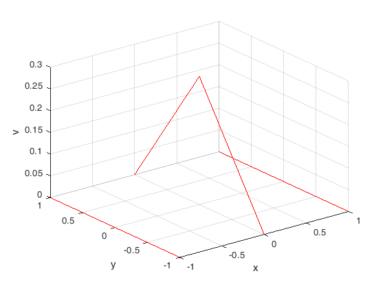

%{ Using the Rayleigh-Ritz method ------------------------------ Solve Poisson's equation in a square -1<=x<=1, -1<=y<=1, subject to the homogeneous boundary conditions V(x,+-1)=0=V(+-1,y). Solve: Due to the symmetry of the problem, we choose the basis function as Umn=(1-x^2)(1-y^2)(x^(2m)y^(2n)+x^(2n)y^(2m)), m,n=0,1,2,... Hence, ? = (1-x^2)(1-y^2)[a1+a2(x^2+y^2)+a3x^2y^2+a4(x^4+y^4)+...] Case 1: When m=n=0, we obtain the first approximation (N=1) as ?=a1u1 where u1=(1-x^2)(1-y^2). A11={Lu1,u1}=-256/45, B1={g,u1}=-16?0/9 Hence, -256a1/45=-16?0/9 ==> a1=5/16?0 and ? = 5?0(1-x^2)(1-y^2)/16 Case 2: When m = n = 1, we obtain the second-order approximation (N = 2) as ? = a1 u1 + a2 u2 where u1 = (1 ? x2)(1 ? y2), u2 = (1 ? x2)(1 ? y2)(x^2 + y^2). A11 and B1 are the same as in case 1. A12 = A21 ={Lu1, u2} = -1024/525, A22 = {Lu2, u2} = -11.264/4725, B2 = {g, u2} = -32/45?o Hence, ? = (1-x^2)(1-y^2)(0.2922+0.0592(x^2+y^2))?o Case 3: When m = n = 2, we obtain the third-order approximation (N=3) as ? = a1 u1 + a2 u2 + a3 u3 where u1 = (1 ? x2)(1 ? y2), u2 = (1 ? x2)(1 ? y2)(x^2 + y^2), u3 = (1 ? x2)(1 ? y2)(x^2 + y^2 + x^2y^2). A11={Lu1,u1}=-256/45, B1={g,u1}=-16?0/9, A12 = A21 ={Lu1, u2} = -1024/525, A22 = {Lu2, u2} = -11.264/4725, B2 = {g, u2} = -32/45?o A13 = A31 ={Lu1, u3} = ?, A33 = {Lu3, u3} = ?, B3 = {g, u3} = ? %} close all ; clear all ; clc ; format short; syms x y; rho = 1; N=3; B = zeros(N,1); A = zeros(N,N); u(1,:) = (1-x.^2).*(1-y.^2); u(2,:) = (1-x.^2).*(1-y.^2).*(x.^2+y.^2); u(3,:) = (1-x.^2).*(1-y.^2).*(x.^2+y.^2 + x.^2.*y.^2); for i=1:N firstInt = int(-u(i)*rho,'x',0,1); secondInt = int(firstInt,'y',0,1); B(i) = secondInt; for j=i:N dfx = diff(u(i),x,length(u(i))); dfxx = diff(dfx,x,length(u(i))); dfy = diff(u(i),y,length(u(i))); dfyy = diff(dfy,y,length(u(i))); lu = (dfxx+dfyy); lu_u = lu.*u(j); firstInt = int(lu_u,'x',0,1); secondInt = int(firstInt,'y',0,1); A(i,j) = secondInt; A(j,i) = secondInt; end end a = A\B; V(x,y) = u(1).*((a(1)+a(2).*(x.^2+y.^2))+a(3).*(x.^2.*y.^2)); [X,Y] = meshgrid(-1:1); plot3(X,Y,V(X,Y),'r-'); xlabel('x'); ylabel('y'); zlabel('v'); grid; fprintf('\t\tx\t\ty\t\tV(x,y)\n'); datasave = zeros(10,3); iter=1; for i=-1:0.5:1 datasave(iter,:) = [i 0 V(i,0)]; iter=iter+1; end for i=-1:0.5:1 datasave(iter,:) = [0 i V(0,i)]; iter=iter+1; end disp(datasave)
x y V(x,y)
-1.0000 0 0
-0.5000 0 0.2058
0 0 0.2949
0.5000 0 0.2058
1.0000 0 0
0 -1.0000 0
0 -0.5000 0.2058
0 0 0.2949
0 0.5000 0.2058
0 1.0000 0
